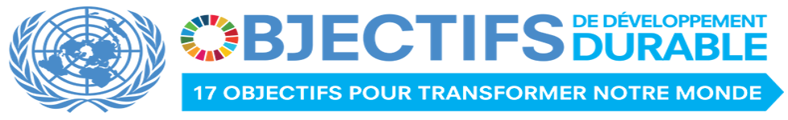
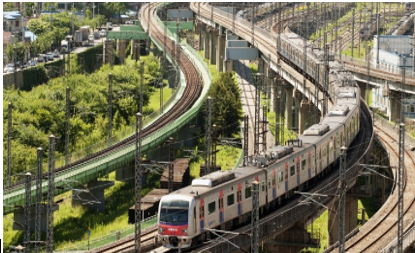

Les Organisation du Réseau FORSPAX en appui aux ODD
NOS PERSPECTIVES EN RAPPORT AVEC LES 17 ODD
Nous aspirons à la promotion des dynamiques communautaires dans les quelles les communautés et les associations de base prospèrent
et sont capables d’articuler leurs demandes d’une façon constructive et utile, et un Etat capable de répondre à ces demandes
à travers la fourniture satisfaisante des services sociaux de base. Ainsi, le paiement d'impôt et taxes et l'amélioration de la gouvernance
sont essentiels pour rétablir la confiance entre les gouvernants et les gouvernés. Susciter et promouvoir des capacités de résilience communautaire.
Un environnement protecteur et propice à l' épanouissement de l'enfant, de la femme et de la famille est crée et est
rendu durable par des mesures et pratiques de bonne gouvernance, de non violence et de citoyenneté responsable(Bertin Masansa).
Les ASBL membres du Réseau FORSPAX leur appropriation et leur contribution aux objectifs de développement durable:

Objectif 1 : Éliminer l’extrême pauvreté et la faim
Objectif 2 : Éliminer la faim, assurer la sécurité alimentaire, améliorer la nutrition et promouvoir l’agriculture durable
Objectif 3 : Permettre à tous de vivre en bonne santé et promouvoir le bien-être de tous à tout âge
Objectif 4 : Assurer l’accès de tous à une éducation de qualité, sur un pied d’égalité, et promouvoir les possibilités d’apprentissage tout au long de la vie
Objectif 5 : Parvenir à l’égalité des sexes et autonomiser toutes les femmes et les filles
Objectif 6 : Garantir l’accès de tous à l’eau et à l’assainissement et assurer une gestion durable des ressources en eau
Objectif 7 : Garantir l’accès de tous à des services énergétiques fiables, durables et modernes, à un coût abordable
Objectif 8 : Promouvoir une croissance économique soutenue, partagée et durable, le plein emploi productif et un travail décent pour tous
Objectif 9 : Bâtir une infrastructure résiliente, promouvoir une industrialisation durable qui profite à tous et encourager l’innovation

Objectif 10 : Réduire les inégalités dans les pays et d’un pays à l’autre
Objectif 11 : Faire en sorte que les villes et les établissements humains soient ouverts à tous, sûrs, résilients et durables
bjectif 12 : Établir des modes de consommation et de production durables
La consommation et la production durables encouragent à utiliser les ressources et l’énergie de manière efficace, à mettre en place des infrastructures durables et à assurer à tous l’accès aux services de base, des emplois verts et décents et une meilleure qualité de la vie. Elles contribuent à mettre en œuvre des plans de développement général, à réduire les coûts économiques, environnementaux et sociaux futurs, à renforcer la compétitivité économique et à réduire la pauvreté.
La consommation et la production durables visent à « faire plus et mieux avec moins », accroissant les gains socioéconomiques nets tirés des activités économiques en réduisant l’utilisation des ressources, la dégradation et la pollution tout au long du cycle de vie, tout en améliorant la qualité de la vie. Elles mettent en jeu différentes parties prenantes, entre autres les entreprises, les consommateurs, les décideurs, les chercheurs, les scientifiques, les détaillants, les médias et les organismes de coopération pour le développement.
Elles nécessitent également une démarche systémique et la coopération entre les différents acteurs qui opèrent dans la chaîne d’approvisionnement, depuis le producteur jusqu’au consommateur final. Elles passent par l’engagement des consommateurs en utilisant notamment la sensibilisation et l’éducation sur la consommation et les modes de vie durables, la fourniture d’informations adéquates aux consommateurs au moyen de normes et d’étiquettes et la pratique de marchés publics durables.
Objectif 13 : Prendre d’urgence des mesures pour lutter contre les changements climatiques et leurs répercussions
Les émissions de gaz à effet de serre engendrées par les activités humaines n’ont jamais été aussi élevées. Entraîné par la croissance économique et l’accroissement de la population, le changement climatique a des effets très étendus sur les systèmes humains et naturels dans tous les pays et sur tous les continents.
Avec le réchauffement de l’atmosphère et des océans, les quantités de neige et de glace ont diminué et le niveau des mers s’est élevé. La température à la surface de la Terre devrait augmenter au cours du XXIe siècle, et si des mesures ne sont pas prises, cette augmentation pourrait dépasser trois degrés Celsius pendant ce siècle.
Du fait des effets du changement climatique sur le développement économique, les ressources naturelles et la pauvreté, la lutte contre celui-ci est devenue un élément indissociable de la réalisation du développement durable. En trouvant des solutions abordables et modulables face au changement climatique, les progrès accomplis au cours des dernières décennies ne seront pas sapés par ce phénomène et les pays auront des économies saines et résilientes.
Objectif 14 : Conserver et exploiter de manière durable les océans, les mers et les ressources marines aux fins du développement durable
Les océans du monde – leur température, leur composition chimique, leurs courants et leur vie sont à la source des systèmes mondiaux qui rendent la Terre habitable par l’Homme
Notre eau de pluie, notre eau potable, notre météo, notre climat, nos côtes, une grande partie de notre nourriture, et même l’oxygène de l’air que nous respirons, sont fin de compte tous alimentés et régulé par la mer. Tout au long de l’histoire, les océans et les mers ont été essentiels pour le commerce et le transport.
La gestion prudente de cette ressource vitale mondiale est un élément clé pour un avenir durable.
Objectif 15 : Préserver et restaurer les écosystèmes terrestres, en veillant à les exploiter de façon durable, gérer durablement les forêts, lutter contre la désertification, enrayer et inverser le processus de dégradation des sols et mettre fin à l’appauvrissement de la biodiversité
Les forêts recouvrent 30 % de la surface de la planète, assurent la sécurité alimentaire et fournissent des abris, et sont essentielles pour lutter contre le changement climatique, protéger la biodiversité et les foyers des populations autochtones. Chaque année, 13 millions d’hectares de forêts sont perdus tandis que la dégradation continuelle des zones arides a conduit à la désertification de 3,6 milliards d’hectares.
La déforestation et la désertification – causées par les activités humaines et le changement climatique – posent des défis majeurs au développement durable et ont des répercussions négatives sur la vie et les moyens de subsistance de millions de personnes qui luttent contre la pauvreté. Des efforts sont déployés pour gérer les forêts et combattre la désertification.
Objectif 16 : Promouvoir l’avènement de sociétés pacifiques et ouvertes à tous aux fins du développement durable, assurer l’accès de tous à la justice et mettre en place, à tous les niveaux, des institutions efficaces, responsables et ouvertes à tous
L’objectif 16 des objectifs de développement durable met l’accent sur la promotion de sociétés pacifiques et inclusives pour le développement durable, l’accès à la justice pour tous et le renforcement des institutions responsables et efficaces à tous les niveaux.
Objectif 17 : Les parténariats pour la réalisation des objectifs
Des partenariats efficaces entre les gouvernements, le secteur privé et la société civile sont nécessaire pour programme de développement durable réussi. Ces partenariats inclusifs construits sur des principes et des valeurs, une vision commune et des objectifs communs qui placent les peuples et la planète au centre, sont nécessaires au niveau mondial, régional, national et local.
Une action urgente est nécessaire pour mobiliser, rediriger et débloquer le pouvoir des milliers de milliards de dollars de ressources privées pour réaliser les objectifs de développement durable. Des investissements à long terme sont nécessaires, telles que l’investissement direct étranger dans les secteurs clés, en particulier dans les pays en développement. Ces secteurs comprennent l’énergie durable, les infrastructures et le transport, et la technologie de l’information et des communications.
.png)